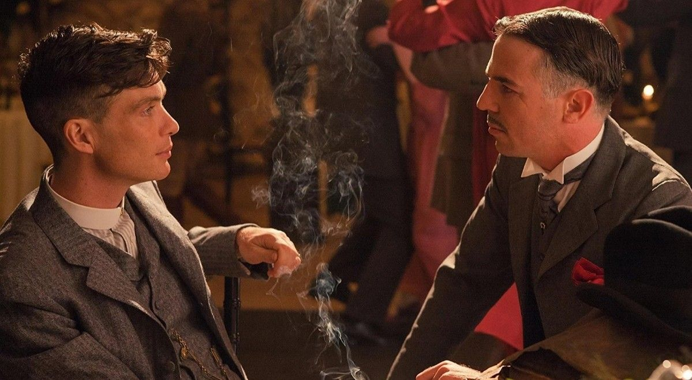
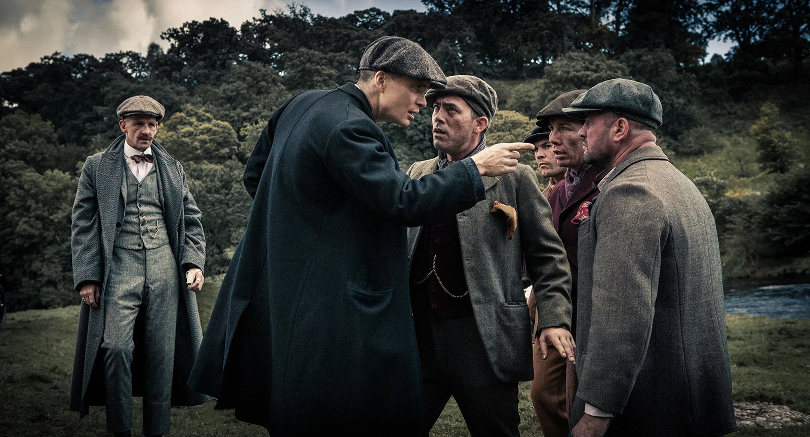
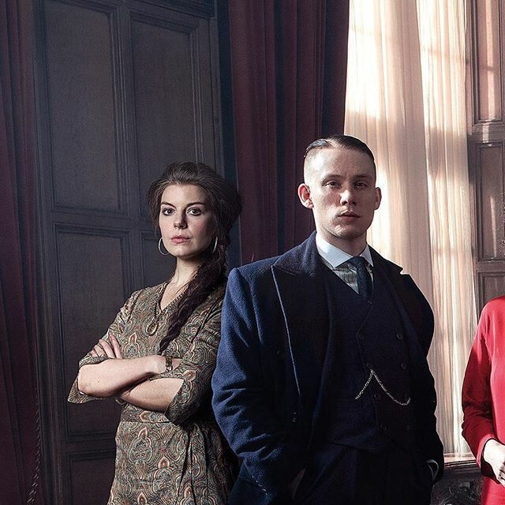
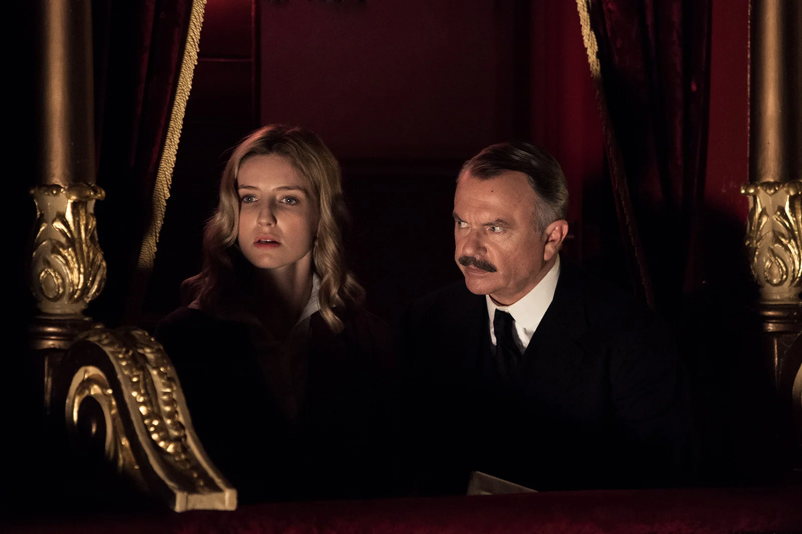
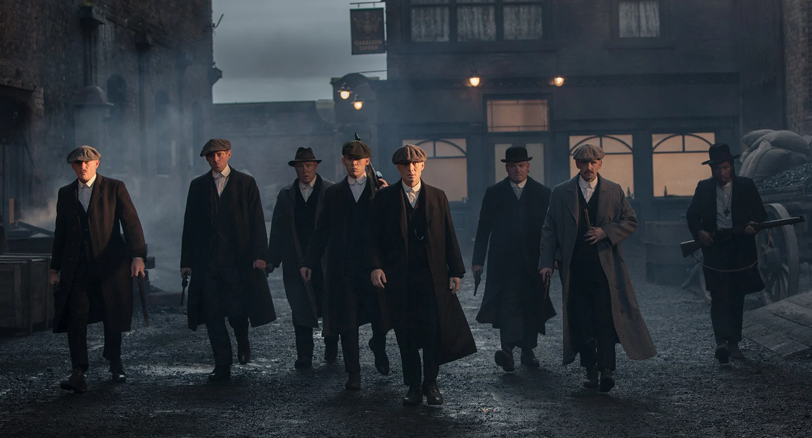

Temporada 1
T1:E1 "Episódio 1"
O ambicioso gângster Thomas Shelby percebe que um carregamento de armas desaparecido pode ser sua grande chance de subir na vida.

T1:E2 "Episódio 2"
Thomas provoca um criminoso local ao trapacear em uma corrida de cavalos e entra em pé de guerra com uma família de ciganos. Campbell organiza um ataque surpresa.

T1:E3 "Episódio 3"
Thomas pretende se aproximar de Billy Kimber nas corridas de Cheltenham e considera uma oferta de simpatizantes do IRA para comprar suas armas.

T1:E4 "Episódio 4"
Thomas está cada vez mais desconfiado da noiva de seu irmão, e Campbell pressiona a gangue a entregar as armas.

T1:E5 "Episódio 5"
Thomas lida com um líder do IRA querendo se vingar da morte de seu primo, e Grace precisa decidir se é leal a Campbell ou Thomas.

T1:E6 "Episódio 6"
Thomas se prepara para tirar Billy Kimber do poder, mas segredos de família e a obsessão de Campbell podem atrapalhar seus planos.